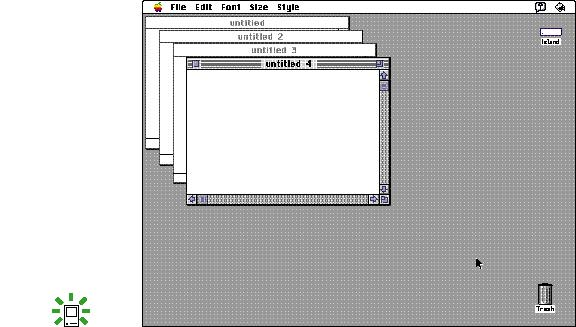
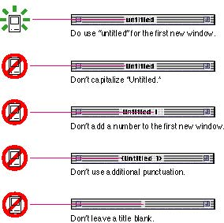

|
Opening WindowsUsers can open windows in a variety of ways including double-clicking a document icon in the Finder, choosing a file from a standard file dialog box, choosing the New command, choosing the Open command, or choosing a command that displays a dialog box. For more information on where to open windows on the screen, see the section "Window Positions" on page 141.When your application displays a new window, title it "untitled," spelled in lowercase letters. If the user chooses the New command again, without saving the first untitled window, title the second window "untitled 2," leaving a space between the word and the number. Continue to add one to the number in the title as long as the user continues to open new windows without saving previously numbered untitled windows. Figure 5-10 shows some examples of appropriate window titles for a series of windows that haven't been saved or named. Figure 5-10 Appropriate window titles for a series of unnamed windows  Add numbers to window titles only when there is more than one open, untitled window on the screen. If the user saves the first window, open the next new one as "untitled." Never capitalize the word untitled in a new window title. It makes the window look like it has a name and discourages people from saving the document with a meaningful name. Don't number the first new window with the numeral one. Usually people open only one window, use it, save and name it, and then go on with other work. In this case, numbering one instance of a window doesn't make sense and is distracting. Also, don't add punctuation of any kind to untitled window titles. Figure 5-11 shows several examples of window titles that use naming techniques you should avoid; it includes an example of the right way to title a window. Figure 5-11 Examples of correct and incorrect window titles  When the user opens an existing document, display the name of the document as it appears in the Finder icon. The document and its corresponding window name must match at all times. |